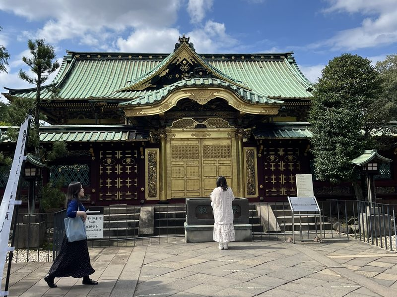

Alles drijft in de soep
Tokyo: wat een metropool. Ik zal je alleen vertellen wat ik zie, en dat is verre van de waarheid.
06/10/2026
Tokyo: wat een metropool. Ik zal je alleen vertellen wat ik zie, en dat is verre van de waarheid.
06/10/2026